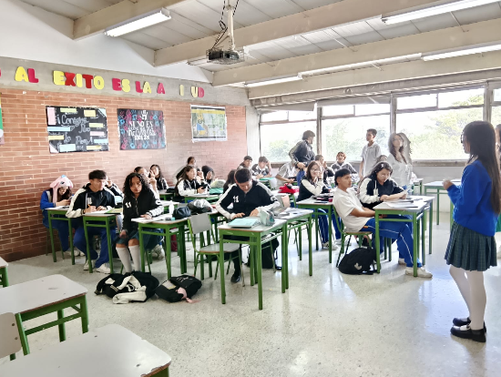
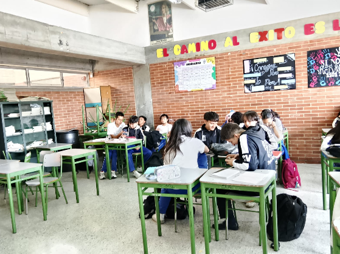
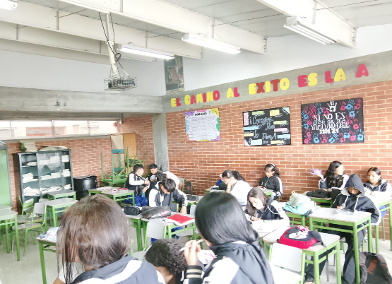
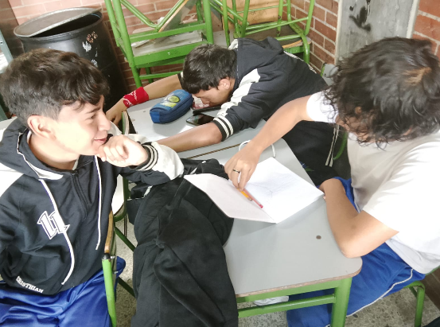
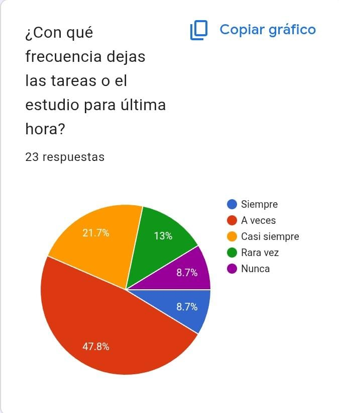
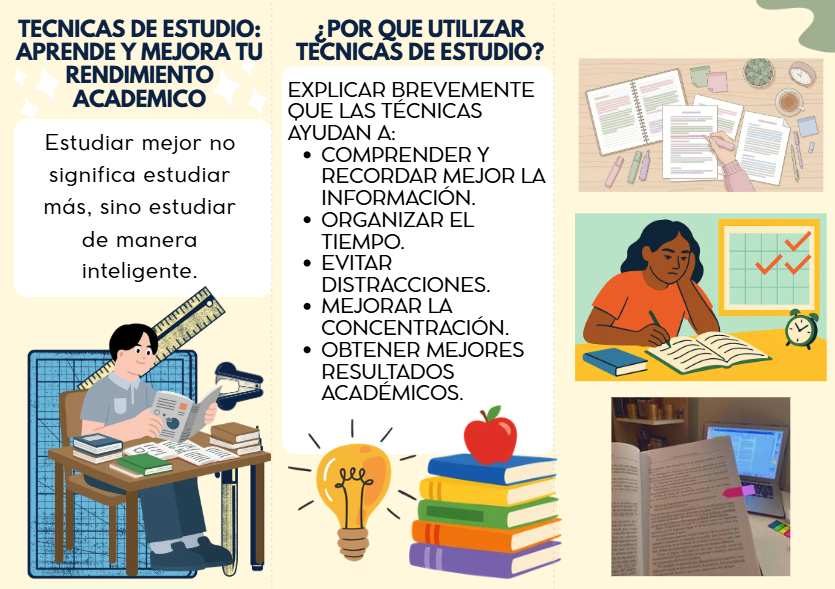
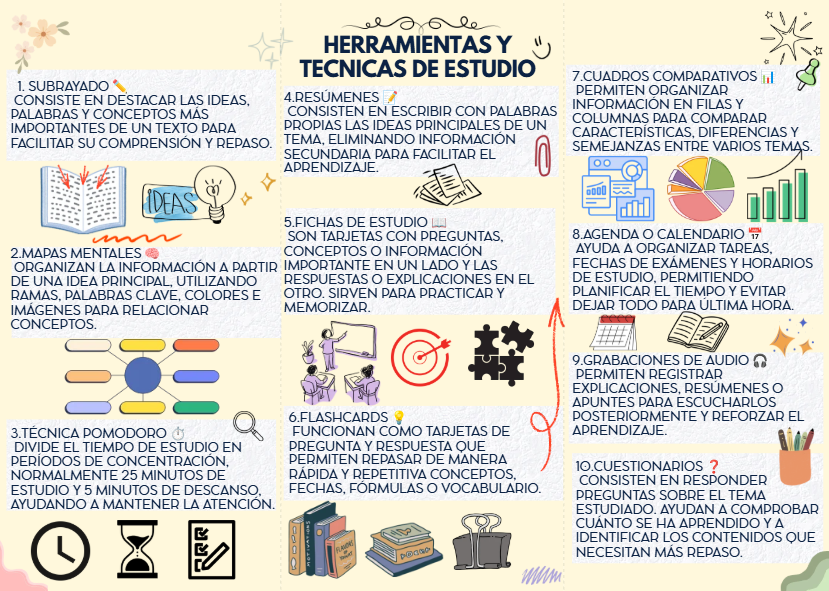
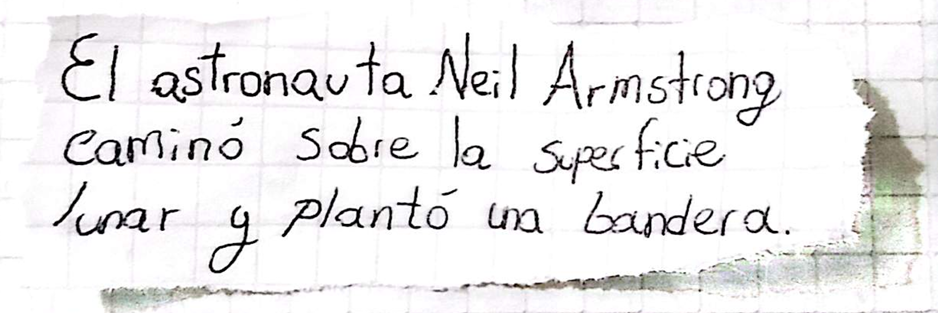
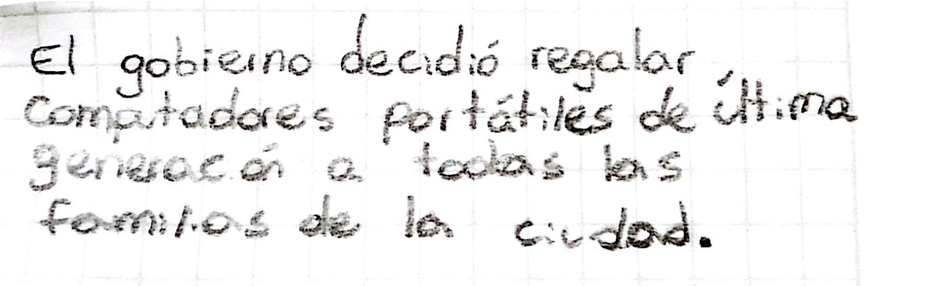
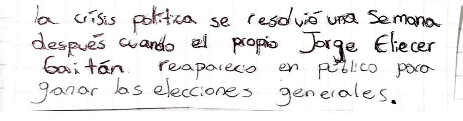

Pruebas de Campo.
A lo largo de este proceso, hemos desarrollado diversas actividades pedagógicas, encuestas de diagnóstico e intervenciones con los estudiantes de grado 11 para identificar problemáticas en los hábitos de estudio, evaluar niveles de atención, comprensión lectora y técnicas aplicadas. En este espacio compartimos de forma detallada todas las evidencias de nuestro recorrido y el impacto generado.




Evidencia 1: Encuesta de Diagnóstico Educativo
La primera actividad tenía como fin recolectar datos para saber cuáles eran las principales problemáticas en los estudiantes al momento de estudiar y posibles técnicas que utilizan. Para esto hemos creado un QR donde encontraban 14 preguntas con elección múltiple en base a sus respuestas hemos sacado el porcentaje para crear una conclusión y posibles soluciones. Para esta encuesta han participado los estudiantes de grado 11 de los cursos 1101 de la jornada tarde 1102 de la jornada mañana, 1102 de la jornada tarde y 1104 de la jornada mañana con un total de 23 estudiantes participantes que por decisión propia han decidido responder de forma honesta.
Pregunta 1
Cargando contenido de la encuesta...

Evidencia 2: Folleto Informativo en Canva
Hemos creado un folleto en el que explicamos Por qué es importante las técnicas de estudio y 10 técnicas de estudio que los estudiantes pueden implementar en sus hábitos de estudio de esta manera les damos herramientas para que utilicen si así lo desean hecho en canva de manera creativa en el que podían acceder por medio de un QR el cual fue dado a conocer en el curso 1104 de la jornada mañana y 1102 de la jornada tarde.


Evidencia 3: Actividad de Memorización
En el curso 1104 de jornada mañana hemos hecho una actividad de memorización inspirado en la técnica pomodoro con el fin de saber qué tan buena memoria tienen algunos estudiantes la actividad consistía en un papelito que se les entregaba a los estudiantes que habían formado grupos de cuatro en este papel podían encontrar 10 palabras cada papel tenía una categoría diferente como la categoría de democracia o naturaleza lo que los estudiantes debían hacer era que durante 2 minutos debían leer cuidadosamente cada palabra y memorizarlas cuando terminaba el tiempo, retirabamos el papel donde contenían las 10 palabras y se les entregaba otro papel en donde tenían 3 minutos para escribir exactamente las mismas palabras que estaban en el otro papel de esta manera observábamos que tan buenos eran reteniendo información en poco tiempo. Hubo un grupo que logró escribir las 10 palabras exactamente en orden y las palabras correctas, por el contrario hubieron varios grupos que no lograron escribir algunas palabras dejando espacios en blanco esto nos indica que hay falta de memorización y concentración en varios estudiantes de este curso por siguiente adjuntamos las imágenes como evidencias de esta actividad.
Evidencia 4: Técnica Feynman / Explicación Sencilla
En el mismo curso 1104 jornada mañana también realizamos otra actividad llamada la técnica de Feynman la cual consiste en que debes definir un concepto de manera sencilla y clara de manera en que incluso un niño pequeño pueda entenderlo esta es una técnica muy reconocida y también muy eficaz ya que si logras definir ese concepto significa que lo entiendes perfectamente en cambio si no lo logras definir indica que no entiendes completamente en qué consiste. La actividad era sencilla se realizó en 5 minutos y trataba de que a los mismos grupos se les repartía un papel con una palabra la cual debían definir en un papel aparte aquellas palabras eran sencillas pero los estudiantes tenían ese reto definirlos como si se lo fueran a explicar a un niño pequeño así que debían trabajar en grupo para pensar en la mejor definición, En esta actividad los estudiantes lograron este reto, ya que sí efectivamente definieron cada concepto de manera clara y concisa esto nos indica que si lograron buscar las palabras para explicar sencillamente y que entendía las palabras que se les entregó, de esta forma se adjunta las respuestas de cada grupo
Evidencia 5: Elaboración de Mapas Mentales


Esta actividad consistía en que se les entregaba un texto de tres párrafos que hablaba sobre la inquisición en el cual los estudiantes debían leer y crear un mapa mental de forma creativa con el objetivo de ver cómo los estudiantes organizaban las ideas por lo tanto elegimos los mapas mentales ya que utilizan gráficas y flechas en las que se dividen la información además de esta forma los estudiantes también por medio de esta actividad pueden mejorar la forma en que organizan la información y aprenden más a utilizar los mapas mentales como herramienta técnica de estudio, ahora verán tres mapas conceptuales y el texto guía
Evidencia 6: Lectura Crítica y Escaneo de Información



Esta actividad le hicimos en el curso 1102 de la jornada mañana consiste en que se les enviaba a un integrante de cada grupo un documento en el que iban a encontrar un texto sobre el bogotazo en donde tenían que identificar tres frases sin sentido y que no tenían coherencia con el tema del texto para esto debían leer cuidadosamente y escribir aquellas tres frases en un pedazo de papel o en una hoja con esta actividad podíamos danos una idea de cómo los estudiantes de este curso escanean e identifican la información del texto, además de saber qué tan bueno es un nivel de lectura y este método es similar al subrayado el cual es una técnica de estudio y una herramienta que podría ser útil para los estudiantes de esta manera se la damos a conocer y a utilizar por medio de esta actividad. Ahora podrán ver el texto utilizado y las respuestas de los estudiantes.
Conclusión del Proyecto
Al analizar los datos de la encuesta y la respuesta del grupo durante los talleres, podemos concluir que la falta de atención y la constante procrastinación en el grado once no se deben a una falta de capacidad cognitiva, sino a la ausencia de estrategias metodológicas claras para organizar el tiempo y manejar las distracciones cotidianas. El diagnóstico inicial reflejó una realidad clara: aunque un 65.2% de los estudiantes se siente neutral frente a sus hábitos, un 87% sufre de estrés académico constante por dejar los deberes para última hora (78.2%) y por no contar con un plan de estudio estructurado (69.5%). Sin embargo, la aplicación de nuestras actividades prácticas demostró que cuando se utilizan herramientas de aprendizaje activo —como el Active Recall, la simplificación con la Técnica Feynman, los mapas mentales y el escaneo analítico de textos—, la disposición del curso cambia por completo. Esto evidencia que la concentración y la retención no son habilidades estáticas, sino procesos que se pueden entrenar con el método adecuado.